Deep Learning Specialization
DeepLearning.AI · Coursera
Neural network foundations, optimization and regularization, structuring ML projects, and convolutional neural networks.
|
Hi My research interests center on reinforcement learning and its applications to finance, gaming, large language model training, and robotics. I'm currently seeking PhD opportunities or Research Engineer and ML Engineer roles in these areas. I completed a master's degree in AI/ML at the University of Birmingham (2023–2024), fully funded by the Google DeepMind International Scholarship. My research focused on state abstractions, representation learning, and bisimulation metrics in reinforcement learning. I worked under the supervision of Mirco Giacobbe and Leonardo Stella, with additional mentorship from Pablo Samuel Castro at Université de Montréal and Google DeepMind, and Rishabh Kabra at Oxford University and Google DeepMind. After completing my bachelor's degree, I worked as a Machine Learning Engineer at DIGEVO. My earlier research experience includes an internship at KAUST, where I worked on StyleGANs under the supervision of Peter Wonka. During my undergraduate studies, I also worked as a part-time Junior Researcher at the Scientific Computing Group, supervised by Israel Pineda, and at DeepARC Research, supervised by Eugenio Morocho. I enjoy participating in conferences and summer schools to keep up with developments in AI and exchange ideas with other researchers. These include SALA 2026, Oxford ML 2024, EEML 2022, EEML 2021, IssoDL 2021, and Workshop MathRL 2021. “I believe knowledge can shape our lives and choices in remarkable ways, and that its value grows when shared.” |
JAX (Dopamine) · TorchRL · OpenAI Gym · LangGraph · MCP servers · RAG
PyTorch · TensorFlow · Hugging Face · OpenCV · Pandas · Matplotlib · Weights & Biases (W&B) · NVIDIA DeepStream · NVIDIA TAO Toolkit
Python · C · TypeScript · Bash · Git / GitHub · Docker · Unix · LaTeX
Spanish (native) · English (C1) IELTS: 7/9 · TOEFL iBT: 104/120
|
I have experience in reinforcement learning, computer vision, and deep learning. |
|
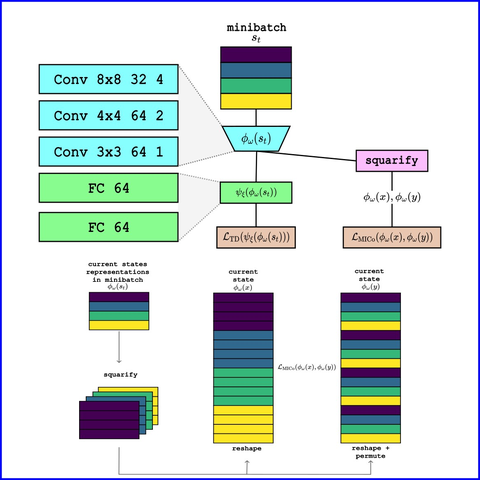 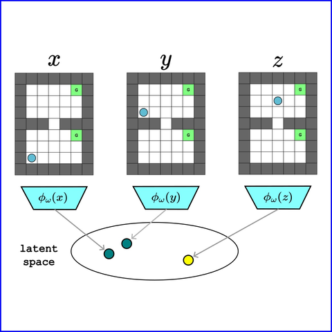 |
Oscar Guarnizo, Mirco Giacobbe, Leonardo Stella Master Thesis, 2023-2024 project page thesis / poster article / demo slides / code Bisimulation Prioritized Experience Replay (BPER) introduces a novel approach to enhance value-based reinforcement learning by incorporating a bisimulation metric to prioritize behaviorally relevant transitions. By balancing traditional TD-error with state behavior similarities, BPER improves data diversity and learning efficiency, as demonstrated in a 31-state Grid World and pixel-based environments. |
|
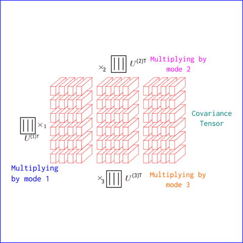 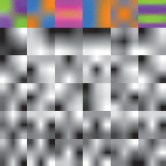 |
Ricardo Fonseca, Oscar Guarnizo, Diego Suntaxi, Alfonso Cadiz, Werner Creixell IEEE Access, 2021 EEML, 2022 project page / paper / poster / video / blog / code During a single step forward, we compute the covariance tensor and factorize it by Tucker decomposition to generate kernels for a CNN. The kernels were then plugged into the CNN (CovarianceNet) for classification. |
|
|
Oscar Guarnizo, Peter Wonka EEML, 2021 project page / poster article / blog / code We reproduced StyleGAN embedding algorithms, adding further experimentation such as inpainting, super-resolution, colorization, morphing, style transfer, and expression transfer. |
|
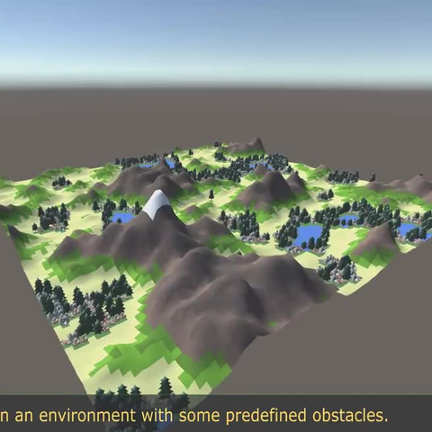 |
Oscar Guarnizo, Israel Pineda LA-CCI, 2019 project page / paper / thesis / video / code / extended code Path planning based on Ant Colony Optimization was studied to deal with stuck conditions and speed up convergence. |
|
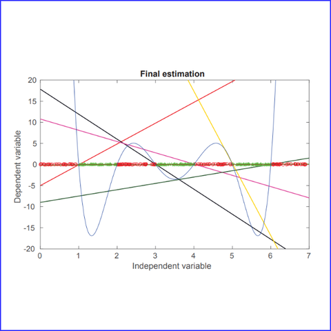 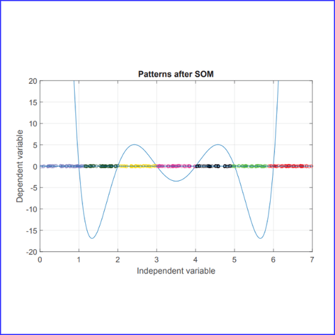 |
Joseph Gonzalez, Fernando Zhapa, Oscar Guarnizo, Francisco Ortega-Zamorano ETCM, 2018 project page / paper / video / code Successive Adaptive Linear Neural Modeling is a two-step approach based on a Self Organized Map (SOM) and an Adaptative Linear Neuron (Adaline). |
|
Additionally, I developed some software projects related to large language models, reinforcement learning, computer vision, and video games. |
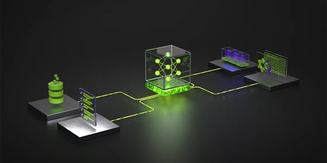 |
Oscar Guarnizo Research exploration · NVIDIA Nemotron Model Reasoning Challenge, 2026 project page / code Can a symbolic solver teach a language model a useful way to search? Explore backward-generated reasoning trajectories, progressive supervised training, and a proposal for rewards that verify intermediate steps. An interactive account of the ideas, obstacles, and unsuccessful experiments. |
|
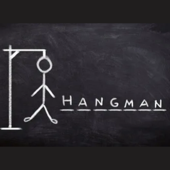 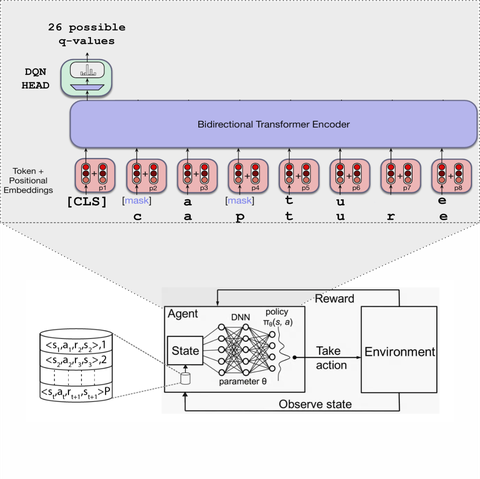 |
Oscar Guarnizo, Self-Learning , February 2025 code This project integrated a pretrained BERT-based model into a Deep Q-Network (DQN) to enhance decision-making in the Hangman word game. The model combines contextual learning from BERT with reinforcement learning, optimizing letter selection via a dynamic reward function based on character frequency and game progression. Explored LoRA fine-tuning, smaller BERT variants, and custom Gym environments improving accuracy from 70% to 75% and achieving a 65% success rate across 113,000 games. |
|
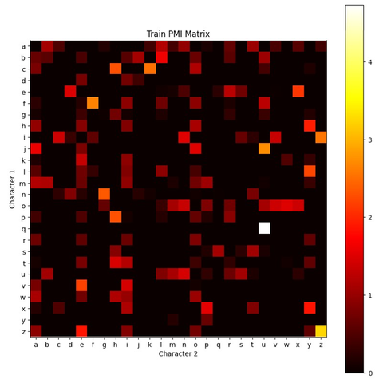 |
Oscar Guarnizo, Self-Learning , May 2024 code This project aims to fine-tune a BERT-based model, called HangmanNet, for character-level masked language modeling to play the Hangman game. The model predicts hidden characters by leveraging bidirectional context from both sides of a word. Additional techniques, such as incorporating prior character frequency and custom data collators, were explored to improve accuracy, particularly for shorter words. |
|
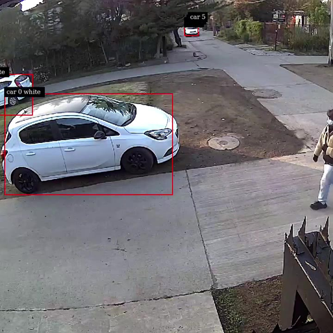 |
Oscar Guarnizo, Leduin Cuenca Mobia Latam, 2022 project page / code We developed a multistream Automatic License Plate Recognition (ALPR) system by assembling an Nvidia deepstream pipeline, training 3+ models with the Nvidia TAO toolkit, and periodically sending data streams to a Kafka Apache for further use cases. |
|
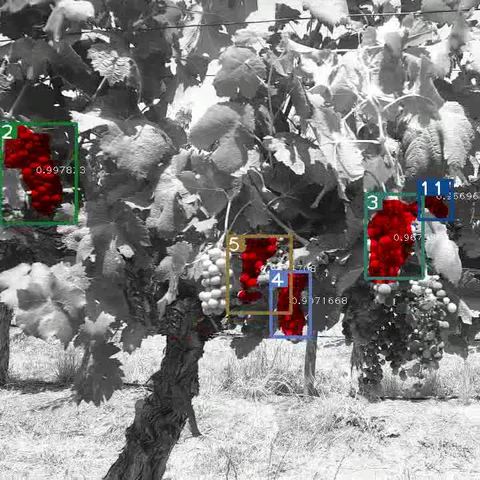 |
Oscar Guarnizo, Diego Suntaxi, Fabricio Crespo Digevo, 2021 project page / video / code We developed a system to segment and count grapes bunches using Mask RCNN and DeepSort Tracker. After that, we extrapolate the counting information to satellite images to generate heat maps that show the number of grapes per parcel in a yield. |
|
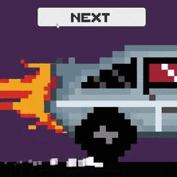 |
Esteban Lasso, Oscar Guarnizo, Joseph Gonzalez, Jose Seraquive GMTK Game Jam , 2020 project page / video game We developed a retro video game in 48 hours using Unity3D to measure our expertise and continue improving. Game Jam Topic: Out of Control |
Selected online courses and intensive training in machine learning, software development, and learning strategies.
DeepLearning.AI · Coursera
Neural network foundations, optimization and regularization, structuring ML projects, and convolutional neural networks.
Neuromatch Academy · Intensive training
Interactive deep learning tutorials and a collaborative research project, covering neural networks, optimization, computer vision, and generative models.
NVIDIA Deep Learning Institute
Building video analytics pipelines with DeepStream on Jetson Nano for object detection, classification, and counting.
Stanford Online · Coursera · Andrew Ng
Foundations of supervised and unsupervised learning, neural networks, and practical methods for evaluating and improving machine learning models.
Udemy · Andrei Neagoie, Zero To Mastery
Implementing data structures and algorithms, analyzing time and space complexity, and practicing structured problem solving for coding interviews.
Coursera · Barbara Oakley and Terrence Sejnowski
Practical learning strategies, including focused and diffuse thinking, chunking, memory techniques, and managing procrastination.